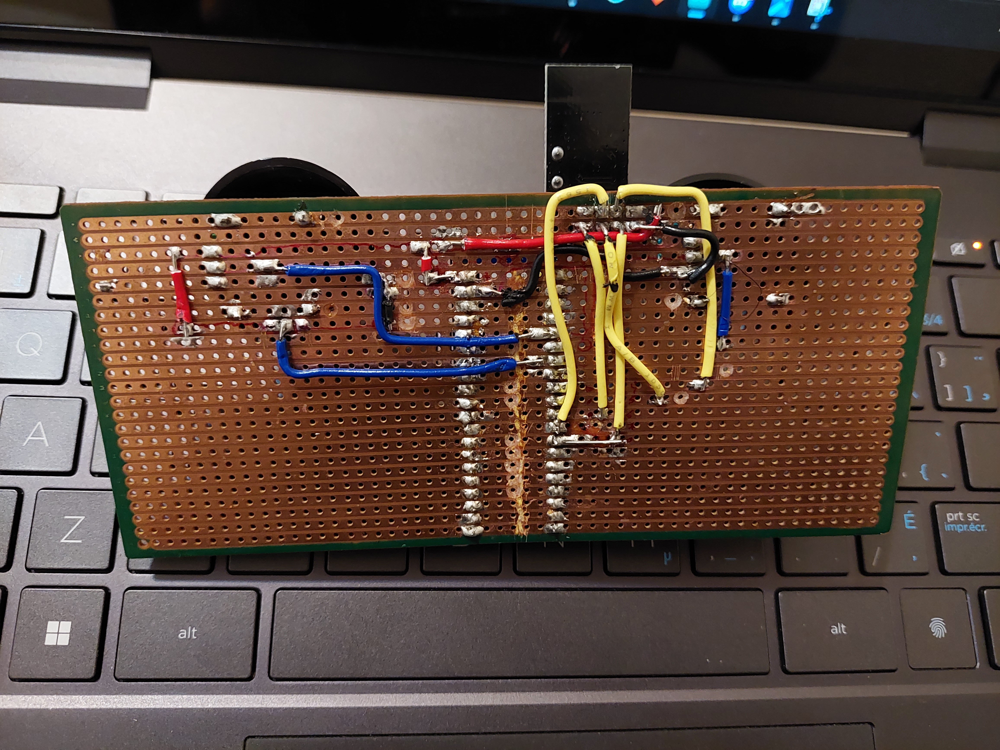

Projects
I have compiled a few of my projects that I enjoyed working on the most. There are some pictures and videos along with them demonstrating how they work.
Wireless Serial Port Communication

I designed this remote to be able to control a python program I made, as well as output PWM on the receiver. The joysticks were taken out from an old remote and soldered onto the breadboard along with all the other electronics. Both the receiver and the remote are powered through USB-C.
The wireless communication is done through a NRF24L01 module, programmed using STM32 Blue Pill. The remote collects analog voltage inputs from the joysticks and sends RF signals to the receiver. The receiver interprets these signals and outputs 3 PWM pins. The data is also sent from the receiver to a python program through a serial port. The python program is very simple and only to demonstrate the wireless communication between the remote and the receiver. Depending on the positions of the joysticks on the remote, the plane in the python program moves faster/slower and up/down.
Metal Detecting RC Robot
In a group of 6, we designed and built a metal detecting remote controlled robot. The robot had the functionality of being controlled from the remote, detecting metal, sending the metal strength back to the remote and picking up metal with an electromagnet. The remote had a joy stick to control the movements of the robot and a LCD to display the metal strength.
I mostly focused on assembling the robot, making the circuits and programming the communication between the robot and the remote. For the communication we used a pair of JDY-40 radio transceiver. The microcontroller on the remote was ATMega 328p, on the robot was EFM8. Both were programmed using the programming language C. I also designed and built the mechanism the pick up the metal on the robot.
Reflow Oven Controller
In a group of 6, we designed and built a reflow oven controller which was used to control the oven so we could solder surface mount components. The controller had an option to change the amount of time a state was on for and the temperature it was at. This was done with a K-type thermocouple wire which was used to detect the temperature and send the values to the N76E003 microcontroller to be processed. The microcontroller which was programmed in assembly outputted PWM to control the oven. The temperature was also plotted on a graph which indicated the moment the state had changed. The graph part of the project was programmed in Python.
I mainly focused on designing and building the circuit along with programming different states of the finite state machine. The main tasks of the software controller was to read temperatures between 25C to 240C and display them on the LCD, control the power of the oven by generating PWM signals, allow button input to change soak and reflow times/temperatures, allow buttons to start, stop, and reset the reflow process and send temperatures via SPI to be displayed on the temperature strip chart.
Line Following Robot
In a group of 3, we programmed a line following robot using a PIC18F46K42 microcontroller. Our task was to program multiple functions which allowed the robot to get passed different obstacles, such as distractions on the track, make sharp left/right turns, come back around if the track ended and stop on the landing pad. This was all programmed using the programming language C.
Through collaboration and the use of debugging, we overcame many challenges. The robot used infrared sensors to detect the track. We had to do many tests in order to get the correct threshold values for the sensors so the robot could run smooth.
RC Plane
I built a remote controlled plane twice, the first time I built one alone and the second time in a group of 4 people. Since I had already built one before, the second time I taught my group members how the plane worked and how to build it, from the electrical hardware to the body of the plane.
I constructed the RC plane using foam board, wood, and fiberglass for strength to weight optimization. The motor mount was made from wood through the use of hand tools. During this project, I learnt how to wire and attach brushless motors with electric speed controllers and how they all worked together. The plane had a brushless motor with a tested maximum thrust of 1kg. Directions of the plane were controlled by using servos attached to control surfaces of the plane. The motor and the servos were controlled by using a 2.4GHz receiver which received signals from the remote transmitter. The plane weighed 450g and had an estimated flight time of 45 minutes.